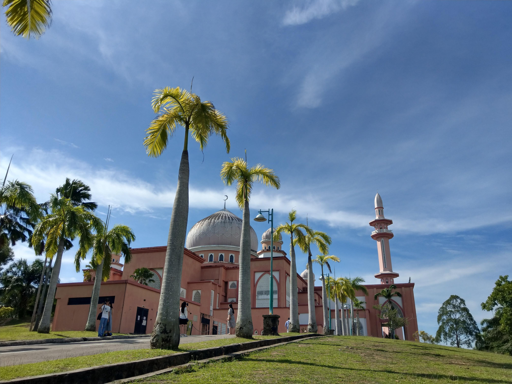

There are many mosques in Sabah with different but amazing style. When I was visiting these mosques, I learned Islam culture at the same time. What time do they perform the ritual? How do they perform the ritual? The bell rings at the ceratin time sounded so different, and the hijab they wear also vary from different person.
- 
It's easy to ride the bike to different sightseeing spots in Sabah. Me and my friend rent a scooter for 3 days. At the time I don't have a scooter license, so I was the one who direct the driver. However, it's some how not easy to understand how was the pattern of the road, so it's kind of mess when we try to go to somewhere. But still, it's a convenient way to travel in Sabah.
There are so many island around Sabah, we chose Mengalum Island to travel. We took a boat from main island to there, to go snorkeling. It was my first time trying snorkeling, and it was also my first time seeing how beautiful the marine creatures are. Corals, clown fish, every creature I expected to find in the ocean all showed in my front. There's also lifeguard beside us, so glad that he took many fantastic pictures for us. Funny thing was that at the time we had to go back to the beach, I just couldn't approach to our ship, 'cause the wave push me away from our ship. Hopefully the lifeguard brought us back. The beach in Mengalum Island was also amazing, clear ocean water, white and shiny sand, swing lying on the beach. Fely like the world most beautiful scenenary was right in frout of me.